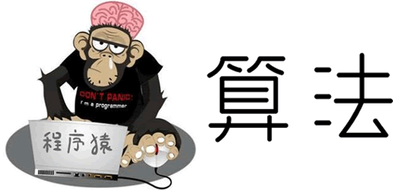
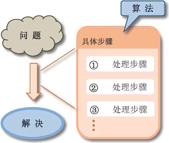

首页 > 编程笔记
算法是什么
要想成为一名合格的程序员，除了至少掌握一门编程语言，更重要的是多动手实践，积累足够的代码量，提升自己“遇到问题，解决问题”的能力。任何一门编程语言的学习，本质就是学习它规定的语法，整个过程只能死记硬背，几乎没有捷径。但是，提高“解决问题”的能力是有捷径可寻的，比如掌握一些算法。
提到“算法”，很多人都觉得它高深莫测、晦涩难懂。事实上的确存在一些算法，学员必须具备优秀的数学基础和编程能力才能驾驭。但对于一位刚刚接触算法的初学者来说，根本不用学习这些“高难度”的算法，掌握一些简单的算法就足以应付实际生活中遇到的 99% 的问题。
从本节开始，我们将为您讲解一些常用的算法，学习它们，不需要您具备多好的数学基础（初中及以上学历即可），掌握 C、Java、Python 中的任意一门编程语言即可。作为学习算法的“第一堂课”，我们首先搞清楚什么是算法。
算法规定了解决某个问题的具体步骤，先做什么、再做什么、最后做什么，只要依次完成这些步骤，问题就可以得到解决。下图清楚地描述了“算法”的含义：
使用伪代码描述算法，可以彻底避免自然语言存在的问题。例如，上面算法对应的伪代码是：
伪代码并不是一门具体的编程语言，它没有严格的语法规定，也无法在计算机上运行。和编程语言相比，用伪代码描述算法最大的优势是：不需要考虑太多语法细节，大大降低了使用门槛。
本教程中，我们在详细讲解每个算法的同时，还会提供实现此算法对应的伪代码。同时考虑到大家掌握的编程语言不同，因此每个算法都会提供 C语言、Java、Python 实现代码。

提到“算法”，很多人都觉得它高深莫测、晦涩难懂。事实上的确存在一些算法，学员必须具备优秀的数学基础和编程能力才能驾驭。但对于一位刚刚接触算法的初学者来说，根本不用学习这些“高难度”的算法，掌握一些简单的算法就足以应付实际生活中遇到的 99% 的问题。
从本节开始，我们将为您讲解一些常用的算法，学习它们，不需要您具备多好的数学基础（初中及以上学历即可），掌握 C、Java、Python 中的任意一门编程语言即可。作为学习算法的“第一堂课”，我们首先搞清楚什么是算法。
算法是什么
“算法”一词最早出现在《周髀算经》这本书中，代指阿拉伯数字的运算规则（例如 1+1=2），对应的英文单词是“algorism”。随着计算机和编程语言的快速发展，“算法”被赋予了新的含义，代指解决问题的过程（步骤、方案），对应的英文单词变成了“algorithm”。算法规定了解决某个问题的具体步骤，先做什么、再做什么、最后做什么，只要依次完成这些步骤，问题就可以得到解决。下图清楚地描述了“算法”的含义：

图 1 算法的含义
图 1 算法的含义
算法和问题之间并不是简单的“一对一”关系：
- 一个算法解决的是具有共性的一类问题，例如我们后续要学习的排序算法，任何需要对数据进行排序的问题都可以用此算法解决；
- 一个问题往往对应有多种算法，虽然它们最终都可以解决问题，但有的算法效率高，有的效率低，需要我们具备挑选“好”算法的能力（后续会学）。
算法提供的仅仅是解决问题的思路，真正解决问题的是我们编写的程序。算法和程序之间的关系可以这样理解，根据算法提供的解题思路，程序员编写出计算机能识别的程序代码，交由计算机执行，从而解决问题。编程语言的种类有很多，比如 Java、C/C++、Python 等，我们学习的算法适用于所有的编程语言。
伪代码描述算法
伪代码是一种介于自然语言和编程语言之间，专门用来描述算法的语言。伪代码VS自然语言
用自然语言描述算法，其实就是口述算法的各个步骤。由于每个人的语气口吻、表达方法各不相同，很可能出现用词不当、语言表述不清等问题。举个简单的例子，设计一种算法，计算 n! 并输出最终结果。如下用自然语言为大家描述了一种解决此问题的算法：- 第 1 步：接收 n 的值；
- 第 2 步：计算从 1 到 n 的乘积，并赋值给 p；
- 第 3 步：输出 p 的值。
使用伪代码描述算法，可以彻底避免自然语言存在的问题。例如，上面算法对应的伪代码是：
输入 n // 接收 n 的值
p <- 1 // p 的初值置为 1
for i<-1 to n： // i 的值从 1 到 n，每次将 p*i 的值赋值给 p
p <- p * i
Print p // 输出 p 的值
通过对比不难发现，使用伪代码描述出来的算法，具有较高的准确性和可读性。此外，伪代码更接近于真实的编程语言，程序员可以很容易的将伪代码转换成程序。其中，// 后续的内容为注释内容，本教程中凡是涉及到伪代码的地方，都会给您标注详细的注释。
伪代码VS编程语言
所谓编程语言，其实就是指有严格的语法规定、能被计算机识别的语言，例如 Java、Python、C/C++ 等，它们都是编程语言。伪代码并不是一门具体的编程语言，它没有严格的语法规定，也无法在计算机上运行。和编程语言相比，用伪代码描述算法最大的优势是：不需要考虑太多语法细节，大大降低了使用门槛。
例如在上面的伪代码中，箭头
<- 的含义是赋值，比如p<- 1 表示将 1 赋值给变量 p。伪代码并没有规定必须用<-表示赋值过程，这只是本教程中习惯使用的表达方式，您也可以用= 表示赋值。本教程中，我们在详细讲解每个算法的同时，还会提供实现此算法对应的伪代码。同时考虑到大家掌握的编程语言不同，因此每个算法都会提供 C语言、Java、Python 实现代码。
关注公众号「站长严长生」，在手机上阅读所有教程，随时随地都能学习。内含一款搜索神器，免费下载全网书籍和视频。

微信扫码关注公众号